Welcome to the help function of Veradius Unity. Here you can find how to use the system during the different steps in the workflow.
Tap an item in the table of contents to open a page.
Every page contains numbers, reflecting subsequent steps in the workflow.
Tap a number for more information about the use of the system during that workflow step. Tap |Next| to see the next workflow step. After having read the last workflow step, tap |Next| to go to the next page.
To get more information about a button, tap the number belonging to it.
By tapping |Table of Contents| you will get back to the table of contents.
When you close and re-open the help function again, it will continue on the page last reviewed. After restart of the full system the help function will start at the table of contents again.
Overview of Veradius Unity Controls
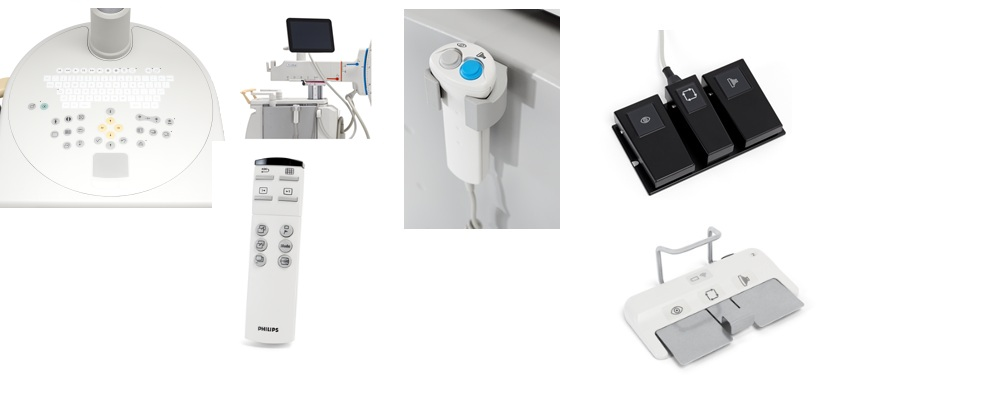
(1) Mobile View Station
(2) C-arm stand touch screen
(3) Remote control
(4) Hand switch
(5) Foot switch wired
(6) Foot switch wireless
C-arm Brakes and Movements
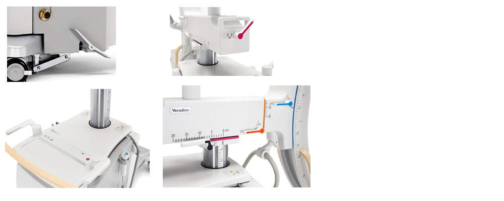
(1) Release break.
(2) Secure break.
(3) Sideways movement: use both steering handles either in the left or right position.
(4) Height movement: press the Up or Down keys on the C-arm console panel. If the C-arm is moved vertically down past the transport position (8cm) it stops and a red led appears. Press the down key again to continue moving the C-arm down. A short beep will sound while the transport position is passed. Be aware that the tank can hit the base of the stand in this position.
(5) Longitudinal: Pink color coding.
(6) Rotation/Propeller movement: Orange color coding.
(7) Angulation/Orbital movement: Blue color coding.
(8) Swivel or wig/wag: Black color coding.
Start Up: Preparation
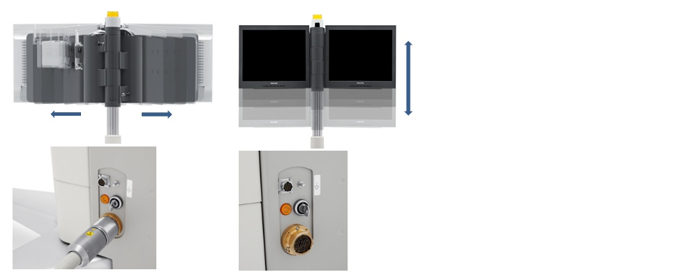
(1) Open the monitors after releasing the pins on the monitor pole.
The monitors are hinged and can swing through 180 degrees for ease of viewing,
either for the physician at the tableside or for the operator at the mobileview station console.
The monitors can be raised and lowered for increased flexibility of positioning.
(2) Insert the Mobile View Station power plug into the wall outlet and connect the Mobile View Station cable to the C-arm stand by aligning the yellow dots. Turn the collar until it locks.
(3) If needed, connect the Foot switch cable to the C-arm stand
Start Up: Switch on the system
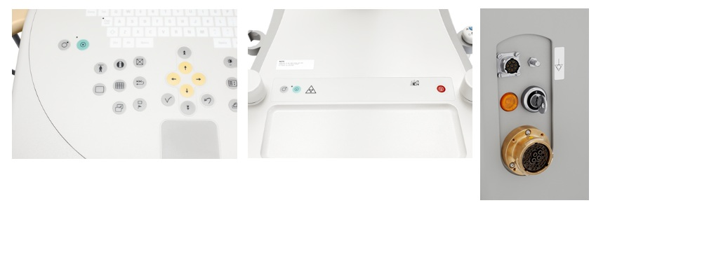
(1) Switch the system on, either on the Mobile View Station or on the C-arm stand. If the Password protection function is enabled, the Password panel appears after system start-up. Enter the correct password in the Password field and click OK.
(2) Insert the key in the panel on the side of the C-arm stand and turn to horizontal position to enable radiation and height movement.
Administration: Entering Patients Manually
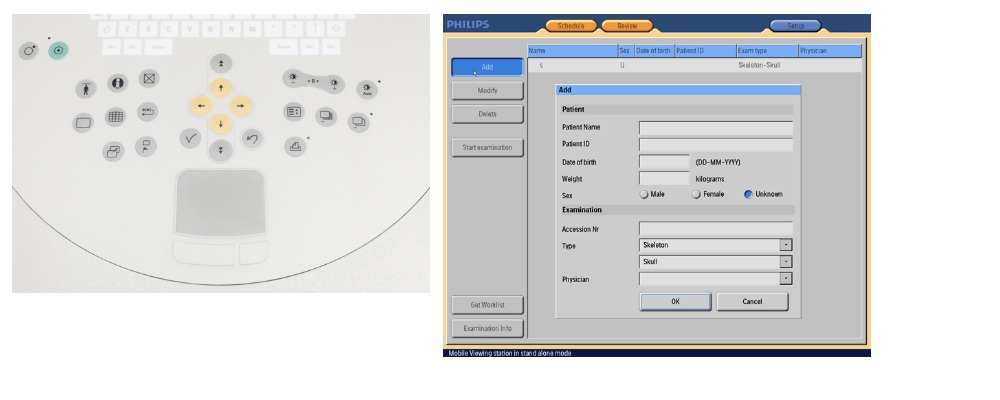
(1) Display the administration page at any time by pressing the administration key.
(2) Click the |Schedule| button.
(3) Click the |Add| button to enter a new patient.
(4) Enter patient data using the keyboard and the touchpad.
(5) Select the procedure and anatomy or detailed procedure that corresponds to the procedure being performed.
(6) Click the |OK| button to confirm.
(7) Click the |Start examination| button.
Administration: Retrieve Patients from RIS/HIS
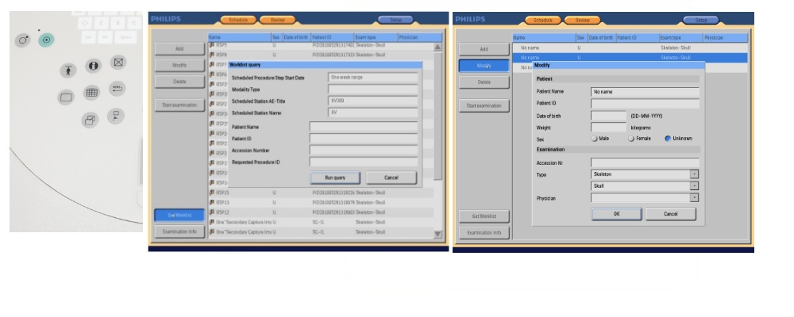
(1) Display the administration page at any time by pressing the administration key.
(2) Click the |Schedule| button.
(3) Click the |Get Worklist| button.
(4) Click |Run query|.
(5) Select a patient for acquisition.
(6) Click the |Modify| button if any changes are required.
(7) Select the procedure and anatomy or detailed procedure that corresponds to the procedure being performed.
(8) Click the |OK| button to confirm.
(9) Click the |Start examination| button.
C-arm stand touch screen: Overview of the Pre-Acquisition screen
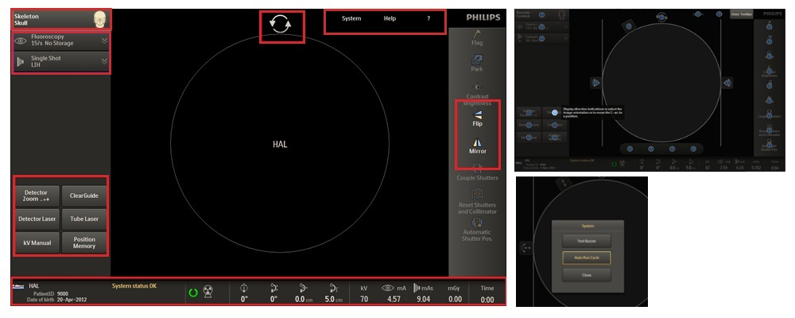
(1) After clicking the |Start examination| button on the Mobile View Station (explained in previous chapters) this overview of buttons will be available. Click this button (1) to change the examination type, the examination type shown is the default examination type or the examination type chosen on the Mobile View Station (see chapter Administration).
(2) Acquisition settings area. In this area you can change the acquisition settings for:
- Fluoroscopy: the left (grey) hand/foot switch or
- Exposure: for the right (blue) hand/foot switch
(3) In this area you will find functions and tools that will support in orientation and positioning of the C-arm. Exception is the manual kVbutton, this will allow you to deselect automatic kV and select a kV value manually.
(4) This part of the C-arm stand touch screen is the status bar.
(4a) Patient information area containing patient details or in case not yet inserted “no name”.
(4b) In this area any warnings or messages for this acquisition examination are saved. They appear in a pop-up box but after tapping |OK| they will be saved here. By tapping this area the pop-up box will be displayed again and in case of multiple messages you can scroll through all of them.
(4c) This areas shows if the system is ready (green) or not (red cross).
(4d) X-ray indicator, will light up yellow in case of fluoroscopy or exposure.
(4e) C-arm positions (rotation, angulation, longitudinal and height) values are shown in this area.
(4f) Dose values of the acquisition exams are shown.
(4g) Total X-ray time of the acquisition examination.
(5) Tap the |Flip| and/or |Mirror| button to adjust the image based on the position of the patient. This can be performed prior to the first fluoroscopy if required.
(6) In this part we can find some extra functions.
(6a) When tapping the |System| button a panel will appear where we can enable auto run cycle and or test the buzzer.
(6b) Tap the |?| button to see the tooltips for all buttons on the screen, by tapping a particular |?| a short explanation of the button will appear.
Pre-acquisition: Examination type selection on the C-arm stand
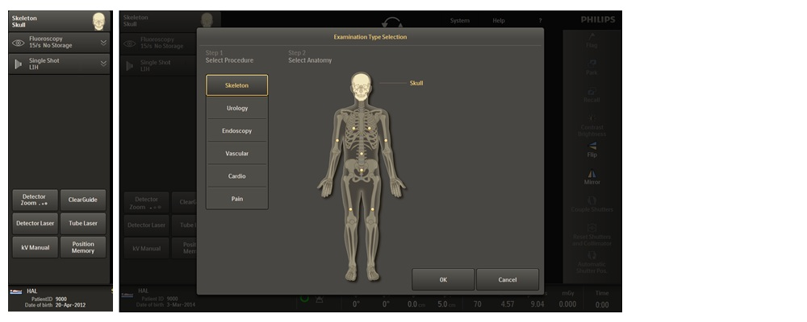
(1) Select examination type on the main screen, the examination type shown is the default examtype or the examination type chosen on the Mobile View Station (see chapter Administration).
(2) Select the required procedure. (The Vascular procedure and Pain procedure are optional.)
(3) Select the required anatomy or detailed procedure depending on the selected procedure.
(4) Tap |OK| to use the chosen examination type and return to main screen.
(5) Tap |Cancel| to return to the previous examination type set for the system.
Pre-acquisition: Settings for Fluoroscopy
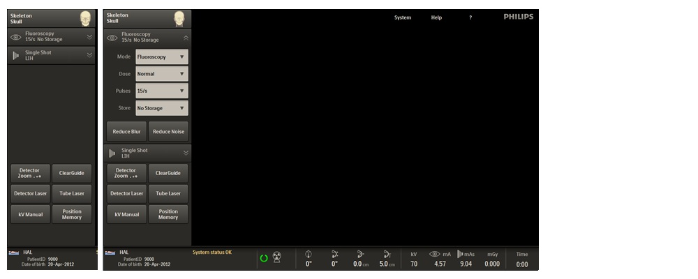
(1) Tap the Fluoroscopy expander to open the expander where you will find the settings that can be changed for the left (grey) key of the hand switch or the left pedal of the foot switch.
(2) Tap the |Mode| drop down list to change acquisition mode for fluoroscopy (the left grey key of the hand switch / left pedal of the Foot switch).
The possibilities can differ per examination type and can be:
- Fluroscopy
- Roadmap (under vascular)
(3) Tap the |Dose| drop down list to change the dose level of the chosen acquisition mode. Possibilities differ for the different examination types and/or acquisition modes. It can also differ when local requirements in regards to dose are applied (example high level disabled):
- Low
- Normal
- Increased
- High-level (not available for all examination types)
(4) Tap the |Pulses| drop down list to change the pulse rate. There are three possible choices for pulse rate and these differ per examination type.
(5) Tap the |Store| drop down list to change the settings. The choices available will be:
- No storage (default)
- LIH
- All
(6) Tap the |Reduce Blur| button to reduce blur in the image; when applying reduce blur the live image will become less blurry but the noise may increase (less noise reduction is applied)
(7) Tap the |Reduce Noise| button to reduce noise in the image; when applying reduce noise the live image will become less noisy but blur may increase (more noise reduction is applied)
Pre-acquisition: Settings for Exposure
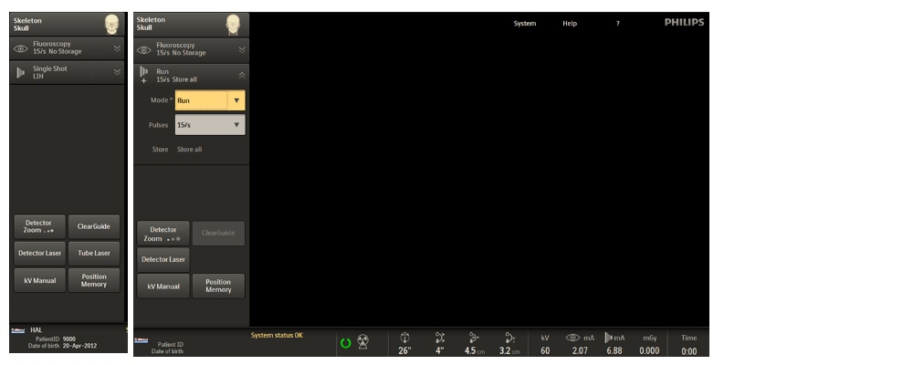
(1) Tap the Exposure expander to open the expander where you will find the default settings that can be changed for Exposure (right blue key of the hand switch / right pedal of the foot switch). These are:
- |Mode| to select the acquisition Mode
- |Pulses| to select the Pulse rate, except in case |Single Shot| is chosen under |Mode|
(2) Tap the |Mode| drop down list to change the acquisition mode for Exposure (the right (blue) key of the hand switch / right pedal of the foot switch). The possible choices differ per chosen examination type and can be:
- Run
- Subtract CO2 (when CO2 is enabled)
- Single Shot
- Trace
- Subtract
- Trace CO2 (when CO2 is enabled)
(3) Tap the |Pulses| drop down list to change the pulse rate. In case |Single Shot| is chosen under mode pulse rate cannot be changed. There are three possibilities available and these differ per examination type.
Pre-acquisition: Image Orientation
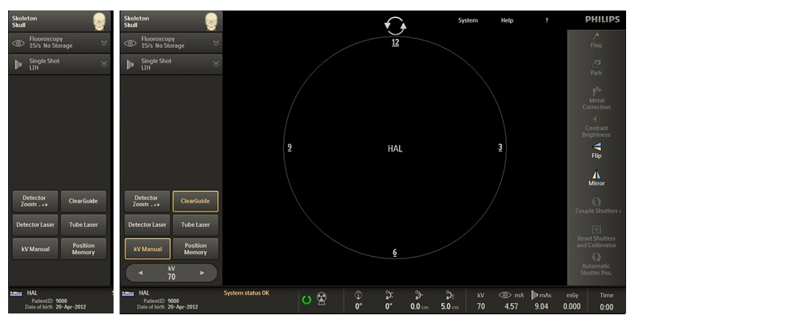
(1) Tap |Detector Laser| to activate the laser at the detector side and use this as support for positioning. Tap |Detector Laser| once more to deselect this laser again.
(2) Tap |Tube Laser| to activate the laser at the tube side and use this as support for positioning of the system. Tap |Tube Laser| once more to deselect this laser again.
(3) Tap |ClearGuide| to make the direction indicators which are printed on the detector (clock), visible on/in the image. Tap |ClearGuide| once more to disable the function. The ClearGuide function supports image rotation prior to initial X-ray, positioning and communication between surgeon and operator when (re)positioning is required.
(4) Image rotation; by dragging the control/handle the image can be rotated, also prior to the first X-ray. When ClearGuide is activated it can be defined which direction the image should be rotated prior to the first X-ray.
(5) Tap |Flip| to flip the image in top-bottom direction. By tapping |Flip| once more the function will be deactivated. In case ClearGuide is active the direction indicators will be flipped with the image.
(6) Tap the |Mirror| button to mirror the image in left-right direction. By tapping the |Mirror| button once more the function will be deactivated. In case ClearGuide is active the direction indicators will be mirrored with the image.
(7) kV Manual; tap the |kV Manual| button to switch to manual control. The mA value is coupled to the kV value automatically. To switch back to automatic control tap the |kV Manual| button once more.
(8) With kV Manual active, tap the arrows to increase or decrease the kV value.
Pre-acquisition: Positioning (Position Tracking)
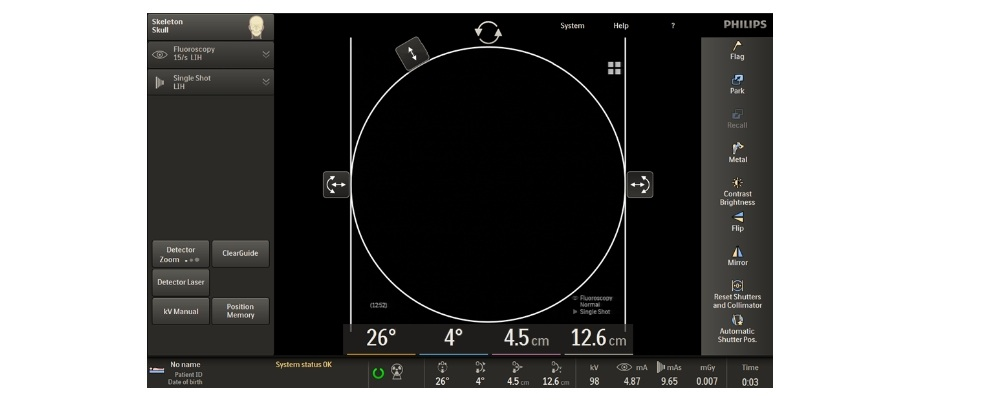
(1) If the position tracking option is installed, the system shows the current C-arm rotation, angulation, height and longitudinal positions digitally on the C-arm stand touch screen.
(2) If the C-arm is moved, position information is magnified and shown in the center of the C-arm stand touch screen. Each figure is identified with the color corresponding to the colors used on the brake handles. If the C-arm is not moved for 5 seconds, the magnified figures fade from the screen.
(1) Based on the chosen examination type you can have to following combinations for the left and right key of the hand switch or left and right pedal of the foot switch:
(2) Fluoroscopy: Use the left (grey) key of the hand switch or the left pedal of the foot switch to initiate Fluoroscopy for C-arm (re)positioning and guiding purposes during surgical and interventional procedures. In vascular the fluoroscopy key is also used to initiate roadmap (see also Image Acquisition: Roadmap after Subtraction)
(3) Exposure: Use the right (blue) key of the hand switch or the right pedal of the foot switch to initiate Exposure for storing high quality images (run) or when you want to use high quality single shot, subtraction or trace.
(4) To change the default combination use the middle pedal of the foot switch or, when activated at installation the |Mode| key on the remote control you can change the default combination to another available combination within the examtype.
Image Acquisition: Single Shot
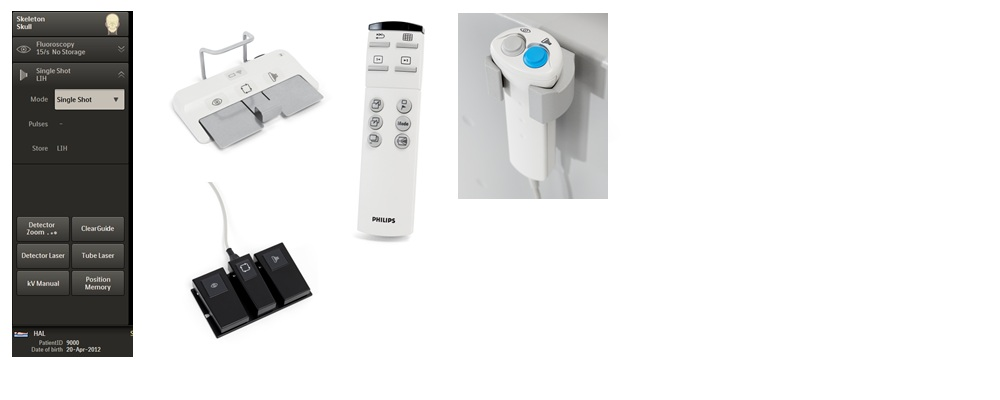
(1) A single shot is used to obtain high quality static images. Make sure single shot acquisition mode under exposure is selected.
(2) Change Mode by tapping the |mode| drop down list (1) or by pressing the middle pedal of foot switch (if enabled) or the |Mode| key on the remote control (if enabled) for mode.
(3) Start by pressing the left (grey) key of the hand switch or the left pedal of the foot switch for positioning and to control the correct kV/mA level. You need to make a scout image prior to single shot to ensure optimal image quality.
(4) To obtain the single shot: press the right (blue) key of the hand switch or the right pedal of the foot switch until you hear a beep. The image will be stored automatically. Additional exposures in the same position can be made without performing a scout image.
Image Acquisition: Subtraction
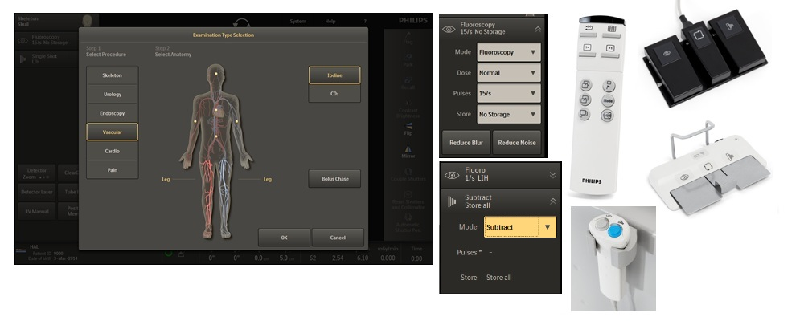
(1) Select a Vascular examination type and tap |OK|. Following combinations will be available under Vascular Iodine:
Fluoroscopy (grey left switch)
Exposure (blue right switch)
Fluoroscopy
Subtract (default combination)
Fluoroscopy
Run
Roadmap
Trace
Fluoroscopy
Single shot
(2) To change to one of the other combinations following possibilities are available:
- tab the |mode| drop down list in the Fluoroscopy expander on the C-arm stand touch screen (2a)
- tab the |mode| drop down list in the Exposure expander on the C-arm stand touch screen (2b)
- toggle with the middle pedal of the foot switch (2c)
- if enabled use the |mode| key of the remote control (2d)
(3) If required the pulse rate for fluoroscopy or exposure can be adjusted by tapping the |pulses| drop down list on the C-arm stand touch screen.
(4) Press the left (grey) key of the hand switch or the left pedal of the foot switch (Fluoroscopy) to scout the desired location.
(5) Press the right (blue) key of the hand switch or the right pedal of the foot switch to create a subtraction run. Start the contrast injection after the message “Inject” appears in the lower right corner of the examination monitor. Release the right key or pedal as soon as the contrast bolus disappears.
Image Acquisition: Roadmap after Subtraction
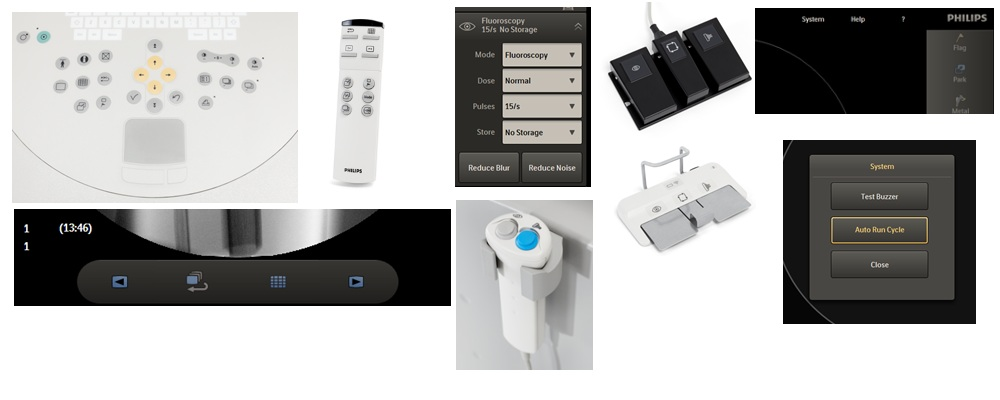
(1) Use the Run cycle button on the C-arm stand touch screen, the remote control or the Mobile View Station to start and stop the run and select the image to be used for the roadmap mask from a previous acquired subtraction run.
(2) When the run on the examination monitor is paused, tap the Next/Previous arrow buttons on the C-arm stand touch screen, the remote control or the Mobile View Station to select the image to be used as roadmap mask.
(3) With the roadmap mask image displayed on the examination monitor, tab the Fluoroscopy expander and change the |Mode| to Roadmap or toggle with the middle pedal of the foot switch or, if enabled, use the |Mode| key of the remote control to change the |Mode| to Roadmap.
(4) Press the grey key of the hand switch or the left pedal of the foot switch to guide a catheter (displayed black) through the vessels (displayed white)
Image Acquisition: Trace + Roadmap
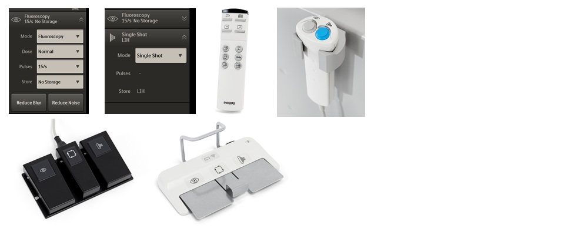
(1) Tab the Fluoroscopy expander and change the |Mode| to Fluoroscopy or toggle with the middle pedal of the foot switch or, if enabled, use the |Mode| key of the remote control to change the |Mode| to Fluoroscopy.
(2) Press the left (grey) key of the hand switch or the left pedal of the foot switch to scout the desired location.
(3) tab the Exposure expander and change the |Mode| to Trace or toggle with the middle pedal (1) of the foot switch or, if enabled, use the |Mode| key (1) of the remote control to change the |Mode| to Trace.
(4) Press the right (blue) key of the hand switch or the right pedal of the foot switch to create a Trace image. Start the contrast injection after the message “Inject” appears in the lower right corner of the examination monitor. The subtracted Trace image appears on the examination monitor. Release the hand switch or pedal after the injection is finished.
(5) Press the grey key of the hand switch or the left pedal of the foot switch to guide a catheter (displayed black) through the vessels (displayed white)
Post-acquisition: Screen Lay-out and available functions
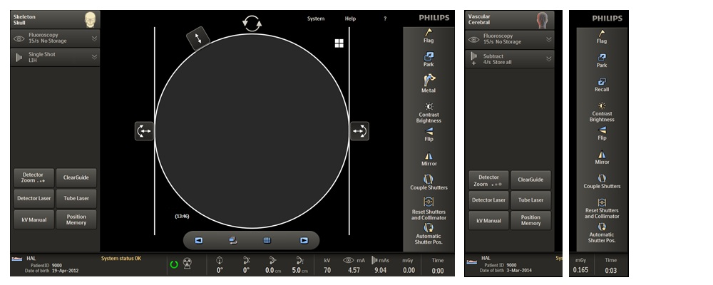
(1) Screen after selection of the examination type skeleton.
(2) Graphic controls for positioning of the shutters. By dragging the control the shutters can be moved in all desired directions.
(3) Tap the |Automatic Shutter Pos.| (ASP) button to automatically position the shutters. ASP will only work if no shutters and diaphragm collimator are present in the image and if there are areas of direct radiation next to the anatomy.
(4) The shutters can be coupled by tapping the |Couple Shutters| button. This button will become active (yellow).
(5) The diaphragm collimator control can be dragged towards, or away from, the centre of the image.
(6) If the shutters and/or diaphragm collimator are positioned but they need to be removed quickly, tap the |Reset Shutters and Collimator| button.
(7) Image Rotation; by dragging the control/handle the image can be rotated, also prior to the first X-ray.
(8) By tapping the |Flag| button you can flag and protect the image.
(9) By tapping the |Park| button the image will be parked on the reference monitor and saved.
(10) When a lot or metal is present in the image a “metal” contrast brightness correction can be applied by tapping the |Metal| button.
(11) Note that for Cardiac or Vascular examination types the |Metal| button will not be available, in these cases it will be replaced by the |Recall| button. By tapping the |Recall| button the image will be placed back from the reference monitor to the examination monitor.
(12) Tap the |Contrast Brightness| button for changing the contrast and brightness settings with the help of a slider. Also the Auto Contrast and Brightness can be chosen here.
(13) Tap the |Detector Zoom| button to magnify an image by changing the detector zoom, available are: no zoom, zoom 1 and zoom 2 which will be visible for a short time in right corner of the image on the Mobile View Station and the C-arm stand touch screen.
(14) Review bar to review stored images
(15) Tap the |Position Memory| button to activate position memory which allows you to store C-arm positions (see also chapter post acquisition: Position Memory)
(16) When ClearGuide is activated it can be defined which direction the image should be rotated prior to the first X-ray (see also chapter Pre-acquisition: Image Orientation)
Post-acquisition: Collimation and Contrast Brightness adjustment
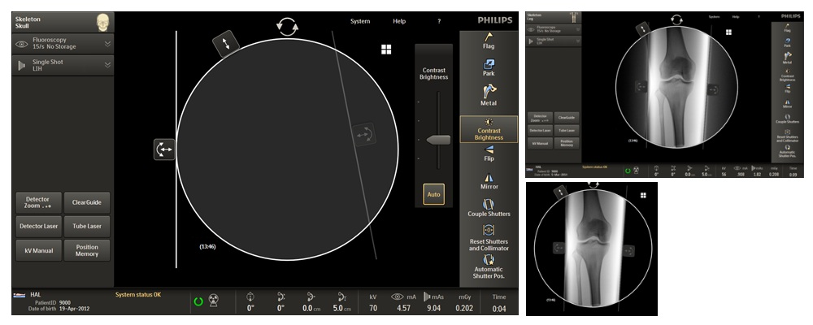
(1) To adjust contrast/brightness tap the |Contrast Brightness| button.
(2) Tab the |Auto| button for automatic calculation of the Contrast/Brightness.
(3) Use the slider to adjust the contrast brightness manually.
(4) Drag the control of the shutters in the desired direction.
(5) After performing Fluoroscopy or Exposure the shutter will be visible in the image. In case enabled at installation the Automatic Electronic Blanking will be applied automatically and cover the physical shutters (A). The shutters now appear in deep black not in grey.
Post-acquisition: Image Protection/Image Flagging
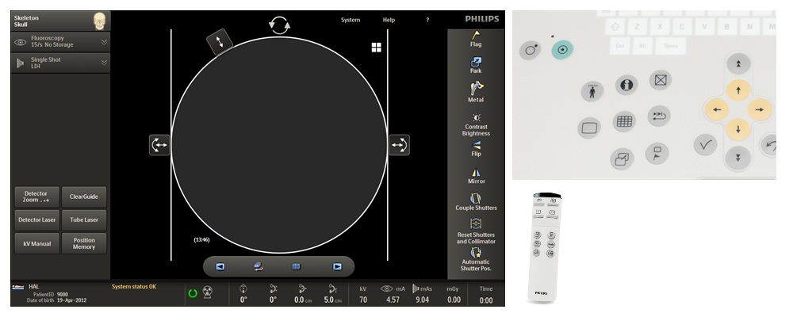
(1) Single images and runs can be flagged (and protected) for export by tapping the |Flag| button on the C-arm stand touch screen, or by pressing the flag key on the on the remote control, or the Mobile View Station. If an image (or run) was not already stored automatically (see also chapter Pre-acquisition) it will be stored by flagging.
Post-acquisition: Image Review
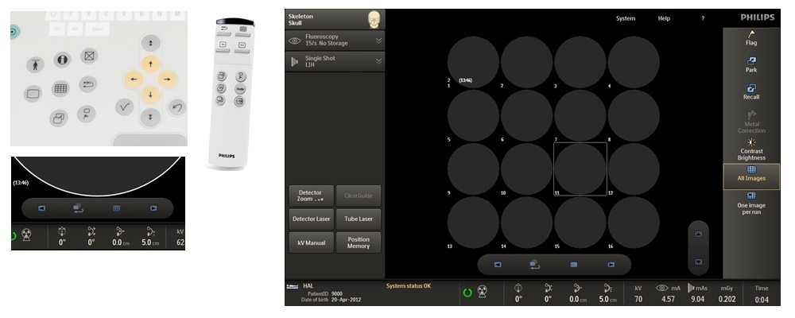
(1) Tab the Overview button on the C-arm stand touch screen, or press the key on the Mobile View Station or on the remote control to get an overview of the stored images.
(2) Choose how you like to review by tapping |All Images| (A) or |One Image per Run| (B)
(3) Use the arrow key (C-arm stand touch screen, Mobile View Station or remote control) to navigate through the stored images.
(4) To view the selected image:
- Tap the image directly 2 times on the touch screen (C-arm / Mobile View Station) or
- Press again the Overview key remote control as described under (1) or
- Tap/press the single image button/key on the C-arm stand touch screen or Mobile View Station (C)
Post-acquisition: Review of a run
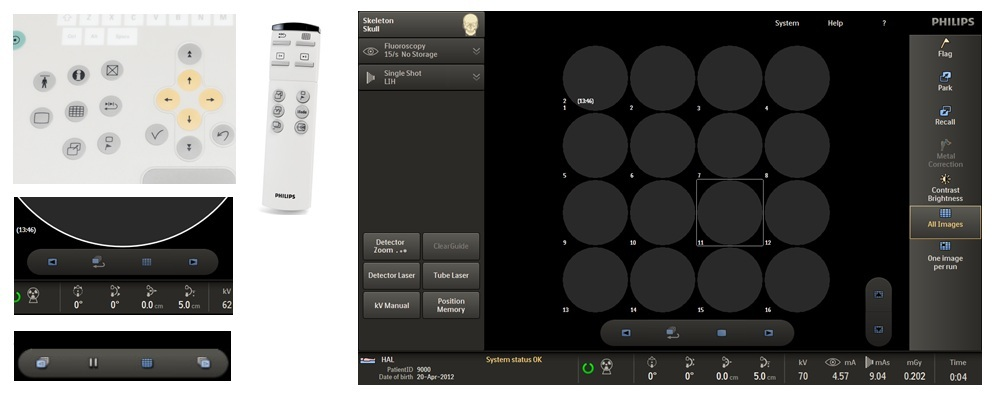
(1) press the Run cycle key on the Mobile View Station, on the remote control or tab the Run cycle button C-arm stand, to dynamically view the images in the run.
(2) On the Mobile View Station or remote control press the Run cycle key again to stop the dynamic view. On the C-arm stand touch screen tab the pause button.
(1) The optional Outline tool can be used to draw markings on an image, for example, during vascular surgery to mark vessel branches and stent positioning on live fluoroscopy images.
Click on the outline tool button on the examination monitor on the Mobile View Station. To hide a drawing without deleting it, click on the outline tool button on the examination monitor of the Mobile View Station once more. The drawing will be removed from the clinical image but is not deleted. To re-display an existing drawing, click on the outline tool button again.
(2) Click on |Draw| in the outline panel.
(3) To draw a dot on the image, click on the image where the dot is required. A yellow dot is drawn on the image. To draw a line on the image, click and drag the cursor on the image where the line is required. A yellow line is drawn on the image.
Lines can be drawn using the mouse, a finger on the touch screen, or the stylus. For best results, it is recommended that you use the stylus.
(4) To delete all lines or dots on the image, click |Delete all| in the outline panel.
(5) Clicking |Undo| after clicking |Delete all| will undo the delete action. To delete the last line or dot drawn, click |Undo| in the outline panel. Clicking Undo can be repeated until all drawn lines or dots have been removed from the image.
Post-acquisition: Position Memory
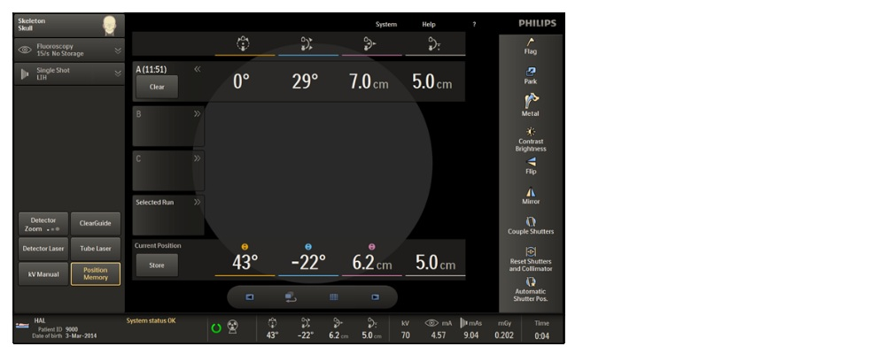
(1) Tap the |Position Memory| button on the C-arm stand touch screen. The position memory dialog is displayed. To close the position memory dialog, tap the |Position Memory| button on the C-arm stand touch screen once more.
(2) To store a position, tap the |Store| button. The current C-arm position is stored in the first empty storage expander (A, B or C) and the storage expander opens to confirm the C-arm position has been stored. The time is also stored for reference.
- (2a) The position memory dialog contains three expanding storage positions (A, B and C) that can be used to store C-arm position values.
- (2b) When reviewing a prior stored run or image the |Selected Run| expander contains the C-arm position for the stored run.
- (2c) When a position is stored the storage expander opens to confirm. The time is also stored for reference.
(3) To go back to a previous stored position tap the desired position (A, B or C) to open the expander. The stored values are displayed
(4) If only one expander is open and the C-arm positions are not matching the stored values, indicators are shown above the values of the Current Position that are different. The C-arm can now be manually repositioned to match the stored position. When the current position matches the stored position, no indicators are shown.
(5) For recalling the position of a previous run, select the run from the overview screen (see chapter image review).
Tap the |Position Memory| button as described under (1).
Tap the |Selected Run| expander. The position details of the selected run are displayed in the Selected Run expander. If only the Selected Run expander is open then indicators are shown above the values in the Current Position that are different to those stored. Manually reposition the C-arm to match the stored position. When the current position matches the position of the selected run, no indicators are shown.
(6) To delete a stored position:
Tap the |Clear| button of the expander containing the position to be deleted.
Post Processing on Mobile View Station
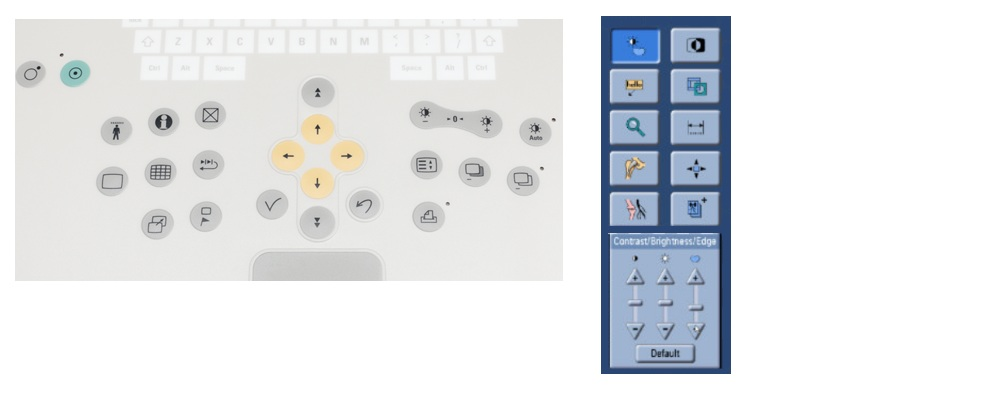
(1) Select the Image Processing key.
(2) Contrast brightness and edge enhancement
(3) Annotation and remark
(4) Zoom
(5) Metal Correction
(6) Landmarking (only works for subtracted images)
(7) Invert
(8) Manual electronic blanking (cropping)
(9) Measure
(10) Pixel shift (only works for subtracted images)
(11) View trace (peak opacification)
(12) Console panel, content depends on the selected function.
Archiving stored images
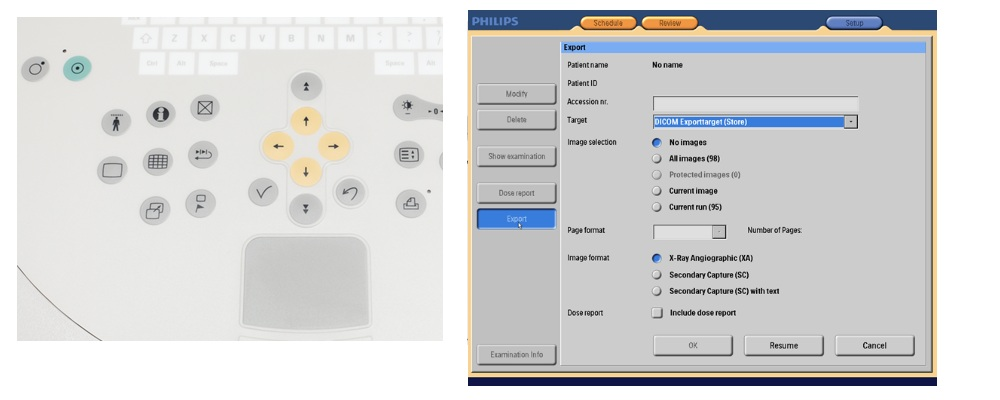
(1) The stored images can be digitally archived via a DICOM network connection.
Connect a data cable to the network and the Mobile View Station. For wireless no cable is needed.
Press the Administration key on the Mobile View Station to switch to the Administration page, click the |Review| button and select the patient from the Review page.
(2) Click the |Export| button.
(3) Select the transfer options.
(4) Click the |OK| button to start data transfer.
Shut down: Emergency power off
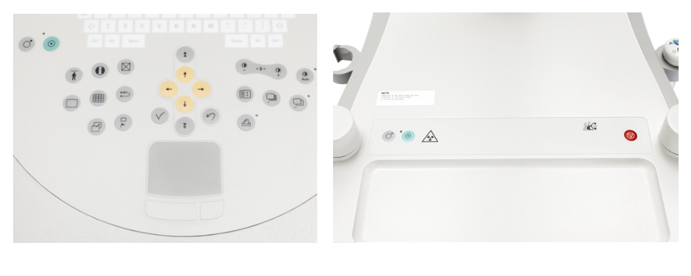
(1) To shut down the entire system: press the Off key at the Mobile View Station.
(2) To shut down the C-arm stand only: press the Off key at the C-arm stand. The C-arm can be switched on again without having to re-start the entire system (Mobile View Station works in stand-alone mode)
(3) In case of emergency, switch the system off. Press the Emergency off key to switch off the C-arm stand and remove the Mobile View Station mains power connector from the mains power outlet socket.
 Introduction
Introduction